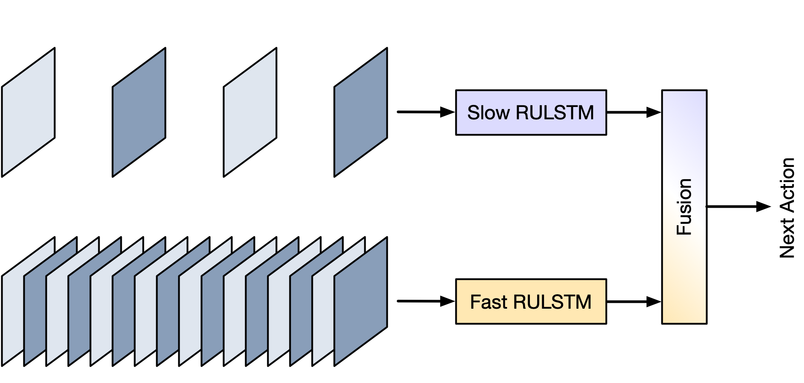
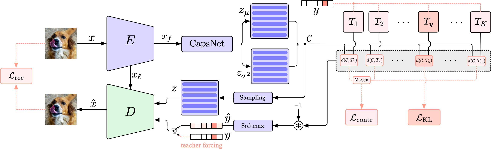
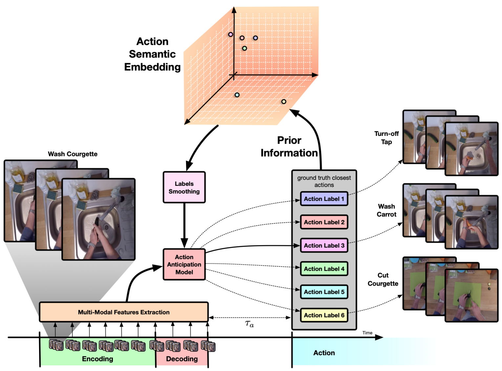

Guglielmo Camporese
Ph.D. Student in Brain, Mind and Computer Science at UniPD, Italy.
home
news
publications
scholar
github
linkedin
cv
extra
Publications
SlowFast Rolling-Unrolling LSTMs for Action Anticipation in Egocentric Videos
Nada Osman,
Guglielmo Camporese
, Pasquale Coscia, Lamberto Ballan
ICCVW 2021
[arXiv]

Conditional Variational Capsule Networks for Open Set Recognition
Yunrui Guo*,
Guglielmo Camporese*
, Wenjing Yang, Alessandro Sperduti, Lamberto Ballan
ICCV 2021
[arXiv]
[code]

Improved Robustness to Disfluencies in Rnn-Transducer Based Speech Recognition
Valentin Mendelev*, Tina Raissi*,
Guglielmo Camporese
, Manuel Giollo
ICASSP 2021
[arXiv]
Knowledge Distillation for Action Anticipation via Label Smoothing
Guglielmo Camporese
, Pasquale Coscia, Antonino Furnari, Giovanni Maria Farinella, Lamberto Ballan
ICPR 2020
[arXiv]
